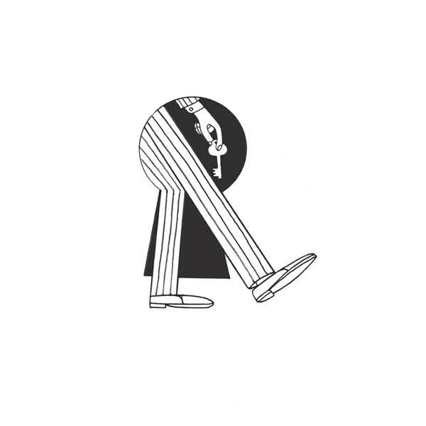

The Whitest Boy Alive - Burning/Inflation
1 Burning
2 Inflation
Double A-side single debut from this cosmopolitan group. Their idea is to make analogue dance music without filters or effects.
RECORDED BY: Daniel Nentwig, Marcin Öz.
SERV026 2006